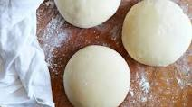

Pizza Dough

Description
This pizza dough is very easy and simple to make.
One can make all kinds of flat breads and pizzas once one has the dough.
The dough is the most vital part of making a delicous home cooked pizza in my opinion.
Ingredients
- 306 grams of all-purpose flour
- 8 grams fine sea salt
- 8 grams granulated sugar
- 2 grams active dry yeast
- 4 grams extra-virgin olive oil
Steps
- In a small mixing bowl, stir together 200 grams lukewarm tap water, two grams active dry yeast and eight grams of sugar.
- Let the mixture stand until you see foam from the yeast activating.
- In a large mixing bowl combine the flour and olive oil and stir until incorporated.
- Once the yeast has been activated pour it into the large mixing bowl with the flour. Knead until well combined, adding salt as you knead. Once combined put a cloth over the bowl and let stand until it doubles in size. PS the standing works quicker when in a warm, but not too hot area!
- After your dough has doubled in size, knead rested dough for 3 minutes. Cut into 2 equal pieces and shape each into a ball. Place on a heavily floured surface, cover with dampened cloth, and let rest and rise for 3 to 4 hours at room temperature or for 8 to 24 hours in the refrigerator. (If you refrigerate the dough, remove it 30 to 45 minutes before you begin to shape it for pizza.)
- To make pizza, place each dough ball on a heavily floured surface and use your fingers to stretch it, then your hands to shape it into rounds or squares. Top and bake.